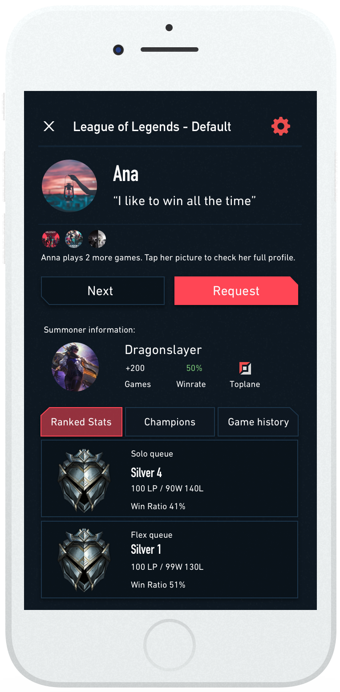
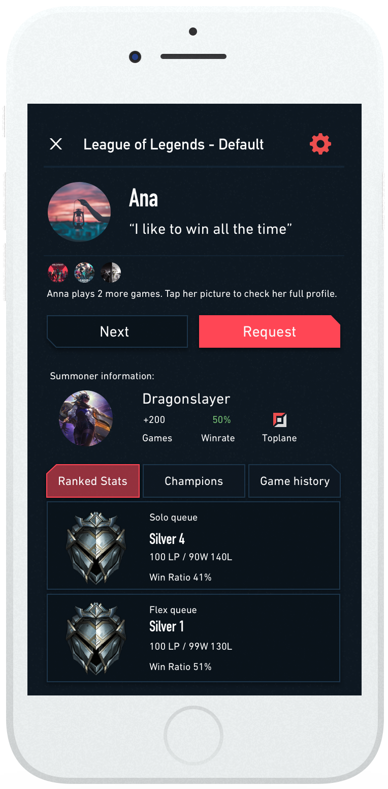
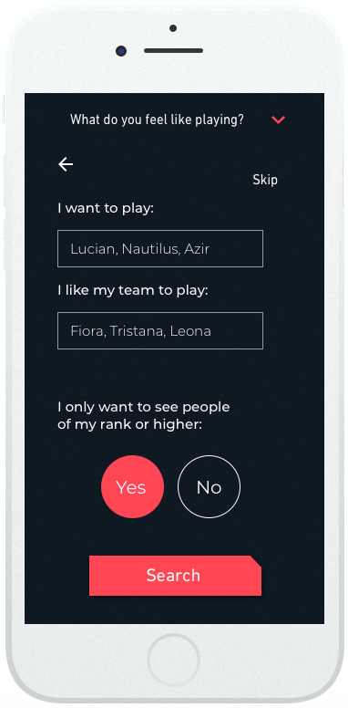
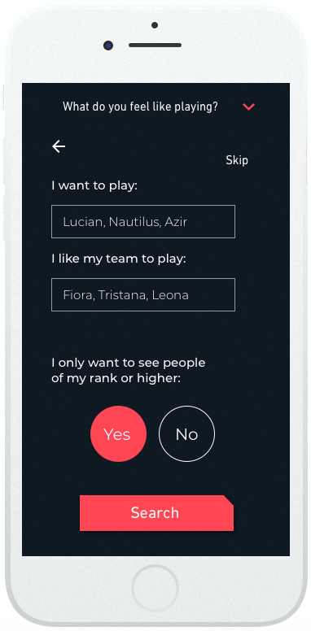

Have you ever played competitive online games? Have you ever "flamed" a teammate? It is not nice to play games to argue with strangers.
Imagine being able to find players that match your preferences.
1. Context
Do you have a friend that plays competitive online games? Maybe YOU play one of these games.
If this is the case, then you must know about the frustration that causes not finding proper teammates to play.
Matcher is born to help Gamers find teammates easier, faster and more accurately than with any other method.
2. Research
To define the main pain points of Gamers, 38 participants answered a survey regarding their habits when playing competitive online games.
As you can see in the graphs below, it was clear that the most important aspect when finding a teammate was the attitude, followed by the decision-making process of the player.
While the study focused in any competitive online game, this project has focused in the most relevant games such as League of Legends, Counter Strike: Global Offensive, Rainbow Six Siege, and many others*
While the surveys provided many answers, it was clear that interviews were needed to further ask about what do gamers seek when searching for a teammate.
After speaking with more than 5 participants, Marc, a 28 year old Gamer from Barcelona, offered himself to follow me during the design and testing process.
3. Prototype
Thanks to all of the opinions and thoughts gathered during the research process, I was able to start designing the MVP.
Goals
Search
Filter
Add
With this ideas in mind and the much appreciated feedback from Marc, I started creating the prototype.
As stated, the main goals were to search for people, filter based on preferences that I obtained through research and finally adding and messaging other users.
Additionally, after some testing it was also clear that a home screen with content related to the games the user plays would make a lot of sense and would provide Marc with exciting content to keep him engaged.

 

As you can see below, users can set up different searches based on their preferences. This allows them to find different kinds of players depending on how they feel at the time. All of the queues that are added will be active and the user can receive friend requests based on those queues.

 
